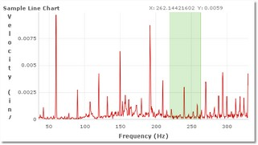
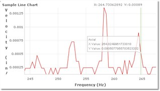

EJSC.Chart.auto_zoom
See Also
|
Definition
string auto_zoom = undefined
Valid property values: 'x' - NOT IMPLEMENTED 'y'
Description
Defines if the chart should auto-select the zoom area based on the X or Y coordinates selected by the user. The other coordinates are automatically selected based on best fit for the data defined in the range selected.
Example
  >> Allow user to select beginning and ending X values to zoom, then auto-scale the Y axis according to the data. var chart = new EJSC.Chart( "chart", { auto_zoom: '‘y” } ); |